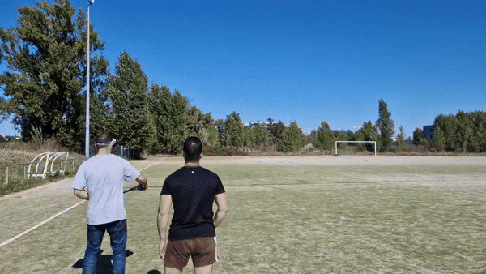

1-Hour Flight Time Under 100g
The 1S Endurance Concept: Pushing Battery Energy Densities
Can a sub-100-gram radio-controlled aircraft achieve a sustained one-hour flight time? While traditional RC drones rely almost exclusively on high-discharge Lithium-Polymer (Li-Po) cells, cylindrical 18650 Lithium-Ion (Li-ion) chemistry delivers substantially higher gravimetric energy density.
Energy Density: Li-ion vs. Li-Po
Comparing equivalent single-cell packs:
• 1S 450mAh Li-Po: 13.5g → 33.3 mAh/g
• 1S 3500mAh 18650 Li-ion: 34g → 102.9 mAh/g
The Li-ion cell provides over three times the specific energy density of the Li-Po battery.

What Does This Mean for Flight Duration?
Li-Po packs offer high C-ratings for intense burst current, which is essential for multirotor acrobatics. However, for steady-state fixed-wing cruising, an aircraft demands only a small fraction of rated discharge.
In bench testing, the DYS 1104 motor with a Gemfan 3018 propeller drew approximately 4.2A at wide-open throttle and cruising current drops to roughly 2.8A – 3.2A in level flight.
With a usable capacity of 3.2Ah from the 3500mAh cell:
3.2 Ah / 3.0 A = 1.06 hours (approx. 64 minutes).
Aerodynamic & Practical Considerations
While the math proves that continuous 1-hour flight is theoretically viable within an 83g all-up weight (AUW), micro delta wings present real aerodynamic trade-offs:
- Yaw Stability: Flying wings lack a traditional rudder and vertical stabilizer moment arm, making them sensitive to crosswinds and gust induced drag corrections.
- Weight Envelope: With a 34g battery on an 83g aircraft, the battery represents over 40% of the entire airframe mass, requiring precise CG balancing.
- Structural Rigidity: Placing cells out on the wings creates chordwise bending moments; keeping mass centered in the fuselage pod maintains optimal wing incidence.
